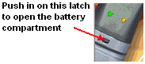
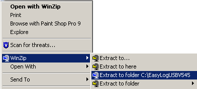
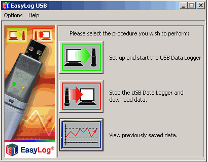
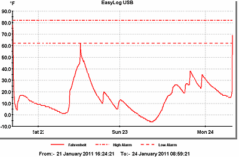
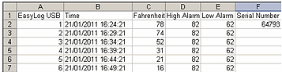

Temperature Logger - Laboratory
Purpose
This document provides operating instructions for the Lascar EL-USB-1 temperature logger which may be used for monitoring the air temperature at customer sites.
Powering On The Logger
Perform these steps to install the battery into the logger.
- Open the data logger battery compartment by pushing in on the latch and pulling the EL-USB-1 assembly apart at the joint between the light and dark gray housing sections.

- Install the battery (1/2 AA 3.6V Lithium) in the internal compartment and reassemble the logger.
Installing The Logger Software
Perform these steps to install the temperature logger software.
- Load the EasyLog software from the CD ROM that comes with the logger (the CD will auto launch the installation wizard).
Or, download the EasyLogUSBV545.zip file from the internet to the laptop.http://www.lascarelectronics.com/download-instructions.php?download=latest
Caution: Do not load the software on the analyzer console PC, it has not been validated for compatibility with our system software. - If installing from the downloaded EasyLogUSBV545.zip file, then:
- Right-click on the EasyLogUSBV545.zip file.
- Select Extract to folder, and save the files to a convenient location.
- Select the setup.exe file in the EasyLogUSB folder to begin installation.

- Select Next in the EasyLog USB InstallShield Wizard.
- Accept the license agreement, and then select Next.
- Select Install to begin installation.
- Select Finish to exit the install wizard.
- Select Install in the EasyLog USB Device Driver Installer application,
- Select OK at the Installation completed successfully message.
Programming The Logger
Perform these steps to program the temperature logger using the Easy Log Application.
- Connect the Temperature Logger to a USB port on the laptop or desktop PC where the EasyLogUSB application has been installed.
- Open the EasyLogUSB application by double-clicking the desktop shortcut created by the EasyLog software installation.
- Select the
Set up and start the USB Data Logger button.

- Select a
Sample Rate >> typical setting 5 minutes (56 days of logging memory) >> Next.
Note: 56 days is the memory capacity of the logger at the 5 minute sample rate setting.
- Select Next to the High and Low Alarms window.
- Select a
Start Time and
.
Note:
- Setting a new recording period erases the old data from the logger.
- The oldest data will be overwritten if the recording time exceeds the memory capacity of the logger.
- Disconnect the temperature logger. It will begin recording at the specified date/time and continue recording until the battery is removed or recording is stopped for data download.
Saving The Data
Perform these steps to save the temperature data.
- Connect the Temperature Logger to a USB port on the laptop or desktop PC where the EasyLogUSB application has been installed.
- Open the EasyLogUSB application by double-clicking the desktop shortcut.
- Select the
Stop the USB Data Logger and Download Data button, then save the EasyLog USB.txt data file to a convenient location.
Note: Saving the data stops recording but does not remove the data from the logger. The logger memory is erased when a new recording period is set.A chart of the saved temperature data will open automatically.

Reviewing The Data
Perform these steps to review the temperature data.
- Open the EasyLogUSB application by double-clicking the desktop shortcut. Select the View previously saved data button. Select the appropriate EasyLog USB.txt file to view the data in an EasyLog chart application.
- The data can be exported to Excel by selecting
Export in the EasyLog chart application.
Or , to open the EasyLog USB.txt file directly in Excel:
- Launch Microsoft Excel.
- Select .
- Select .
- Select .
- Check-mark the Comma option, and then select .
